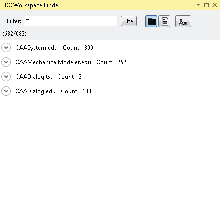
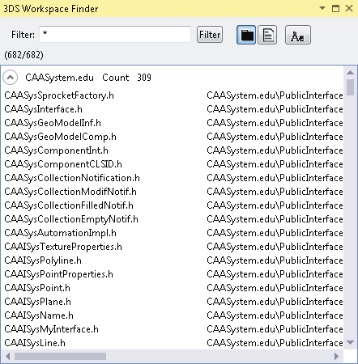

Either:
- On the View menu, point to 3DS Views, and click
 3DS Workspace Finder.
3DS Workspace Finder.
- Right click the root node of the 3DS Workspace Explorer, and click Search File.
The 3DS Workspace Finder view opens.

Click
 in front of the framework for which you want to display the files.
in front of the framework for which you want to display the files.
